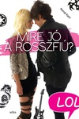

Ifjúsági regények
| Szerző | Cím | Megjelenés | Leírás | Borító |
|---|---|---|---|---|
| Bianca Pitzorno | Tiniálom - nyári különkiadás | 2008 | A három városi barátnő egy hegyi falucskában tölti nyarait. Paradicsomi helyszín, ahol élményeiket azzal tetézik, hogy számtalan titkot megosztanak egymással családi problémáikról és első szerelmeikről… Egy nap azonban a feje tetejére áll a világ! A faluba megérkezik egy közismert szappanopera stábja. S velük egy igazi tinisztár: Scintilla Luz, aki a képernyőn a nemes Violante kisasszonyt alakítja. Nem csoda, hogy az egész falu őt figyeli, és Barbara, Valentina és Vittoria sem nyugszik addig míg meg nem ismerkedik vele. Közelről azonban Violante egyáltalán nem olyan, amilyenre számítottak… | |
| Leiner Laura | Bábel | 2013 | Zsófi tizenhét éves és RHCP rajongói blogot ír, ezért nem is kérdés, hogy az idei Bábelfesztre egész hetes bérletet vesz, hiszen az utolsó nap sztárfellépője a Red Hot Chili Peppers. Zsófinak ez lesz élete első fesztiválja, amelyen barátaival, Napsival, Abdullal, Hipóval és Szaszával együtt vesznek részt. Ez pedig azt is jelenti, hogy többnapos, ismeretlen olaszok utáni hajtóvadászat, az orvosi sátorban töltött hosszú órák és a VIP-szekcióba való kétségbeesett bejutási kísérletek is várnak rájuk. A folyamatos bulizás, sátorozás, a koncertek és a legelképesztőbb közös élmények felejthetetlenné teszik ezt a hét napot, sőt, talán az egész nyarat. | |
| Akkor szakítsunk | 2014 | Miért kell a szilveszternek feltétlenül az önfeledt bulizásról szólnia? Van az úgy, hogy az ember legfeljebb annyira vágyik, hogy egy rossz film előtt belesüppedjen a kanapéba, csokit és chipset tömjön magába, és közben zokogva búcsúztassa az óévvel együtt a frissen gallyra ment kapcsolatát. Épp így tervezte Lia is, miután stílusosan, december 24-én szakítottak Norbival. A barátaik azonban nem pontosan úgy képzelték el az év utolsó napját, mint Lia, ezért a szilveszter éjszaka végül sokkal inkább egy őrült road movie-ra hasonlított, amely fölött mintha mindenki elveszítette volna az irányítást… | ||
| Bexi sorozat (6 kötet) | 2014-2017 | A sorozat hat kötete sorban: Késtél, Hullócsillag, Illúzió, Nélküled, Valahol, Egyszer. leírásuk | ||
| Beth Reekles | Kissing Booth (Csókfülke) | 2012 | Egyetlen csók… mégis mindent fenekestől felforgat… Amikor az iskola Tavaszi Karneválján Elle csóksátrat nyit, úgy hozza a sors, hogy az ajka összeforr Noah-éval, és ettől Elle élete fenekestől felfordul. Románcuk azonban korántsem mesébe illő, és Elle joggal tart attól, hogy előbb-utóbb összetörik a szívét… Vajon elnyeri végül Elle a boldogságát? | |
| Kelly Oram | Szívszűrterápia strébereknek | 2013 | Avery gyakorlatilag születése óta szerelmes a legjobb barátjába. Aidennek ugyan fogalma sincs erről, a lány mégis vígan tervezgeti közös jövőjüket. Egész addig, amíg a srác közli, hogy barátnője van… Mit lép erre a stréber Avery? Hát igazi kocka módjára a tudományba menekül: egy sor társadalmi kísérlettel akarja bebizonyítani, hogy az összetört szív csak akkor gyógyul be, ha az ember előbb túljut a gyász hét fázisán. Csakhogy a kivitelezéshez szüksége van egy független külső megfigyelőre — itt lép a képbe Aiden bátyja. A csöppet sem stréber Grayson olyan dolgokra veszi rá a gátlásos lányt, amiket korábban álmában sem mert volna megtenni. A suli alfahímje és a legnagyobb stréber egyre több időt tölt együtt — persze kizárólag a tudomány érdekében! —, és közben egy egészen új kísérlet veszi kezdetét… | |
| Cinder és Ella | 2014 | Ella élete minden, csak nem tündérmese. Nyolc hónapja vesztette el édesanyját egy balesetben, ő pedig súlyos sérüléseket szenvedett. Most gyerekkora óta nem látott apjához meg annak új családjához kell költöznie. Mesés… Egyvalaki tartja benne a lelket: Cinder, akivel évek óta barátok a neten, de sosem találkoztak. Ella annyit tud, hogy a srác vicces, szexi, okos, és ugyanakkora könyvmoly, mint ő. (Á, egyáltalán nem az esete…) Fogalma sincs, hogy Cinder az egyik legmenőbb hollywoodi színész, aki a kedvenc fantasyregényükből készült filmben játssza a herceget. Vajon képes a valóságban is tündérmesévé változtatni Ella életét? | ||
| Komal Kant | Mire jó a rosszfiú? | 2012 | Mi a közös Ashtonban és Lucában? A világon semmi. Igaz, gyerekkorukban elválaszthatatlan barátok voltak, de évek óta szóba sem állnak egymással. Lucából azóta agyontetovált rocker srác lett, aki tesz rá, mit gondolnak róla a menők a suliban, a lányt viszont egyedül a népszerűség érdekli. Amikor Ashton helye meginog a gimis tápláléklánc csúcsán, dühítő módon Lucára szorul, aki persze egyáltalán nincs oda az ötlettől, hogy kisegítse az elkényeztetett pomponlányt − pláne úgy, hogy a pasiját kell alakítania! De ahogy egyre több időt töltenek együtt, és egyre több régi sérelmet tisztáznak, már nem az a kérdés, hogyan viseljék el egymást, hanem hogyan tartsák távol magukat (na meg a kezüket) a másiktól. Talán mégis van bennük valami közös… |  |
| Jandy Nelson | Az ég a földig ér | 2010 | Kár, hogy a szerelemhez nem jár időzítő szerkezet, mint a bombákhoz. Legalábbis Lennie szerint. A tizenhét éves lány nemrég vesztette el imádott nővérét, és semmire sem vágyik kevésbé, mint hogy egyszerre két fiú is feldúlja addigi békés, eseménytelen (mondjuk ki: unalmas) életét. Mégis ez történik. Lennie-t a közös veszteség egyre közelebb sodorja Bailey vőlegényéhez, de közben felbukkan Joe, ez a fantasztikus, szenvedélyes srác, akinek a gitárjátéka virtuóz, az életöröme ragadós, és akinek minden egyes csókjától mintha felrobbanna a világ… Az egyik fiú emlékezni segít, a másik felejteni. De szabad-e egyáltalán boldognak, szerelmesnek lennie, amikor épp gyászol? | |
| Lauren Morrill | Vakrandi a végzettel | 2012 | Julia semmit nem bíz a véletlenre, köszöni szépen. Pláne nem egy tanulmányi kirándulást Londonba, ami a hozzá hasonló Shakespeare-rajongóknak az ígéret földje! Csakhogy a kiszámítható terveknek lőttek, amikor idegesítő osztálytársával, a szabályokat hírből sem ismerő Jasonnel kerül párba az út idejére. Már első este egy vad buliban találják magukat, és másnap Julia flörtölős SMS-eket kap egy ismeretlen számról! A lány persze kíváncsi a rejtélyes imádóra, ezért alkut köt az ördöggel (izé… Jasonnel), aki segít kideríteni, ki küldi az üzeneteket, ha Julia hajlandó végre lazítani egy kicsit. A kalandos hajsza során a lány sok mindent megtanul, ami nem szerepel (kismillió) útikönyvében − például, hogy semmi nem lepi meg annyira az embert, mint az igaz szerelem. | |
| Anne Eliot | Toplistás szerelem | 2012 | Hunter tudja, hogy az a balhé a kocsival hülyeség volt. De hát egy popsztártól mindenki azt várja, hogy őrültségeket csináljon, nem? Emiatt még nem kéne az anyjának meg az ügynökének száműznie őt a nagynénjéhez egy isten háta mögötti kisvárosba. Na és kit kérnek meg, hogy segítsen neki álruhában elvegyülni a helyi gimiben? Valami flúgos kiscsajt, aki fiúk közelében teljesen lebénul, és/vagy véletlenül kiüti őket. Remek… De fura módon a világhírű énekestől a már-már kórosan félénk Vere valamiért mégsem jön zavarba, sőt Hunter mellett be nem áll a szája, imád vele lógni, és folyton pasiszerző tippekért nyaggatja. Vagyis a tinilányok millióinak bálványa pillanatok alatt a barát zónában találja magát. Na ehhez azért neki is lesz egy-két szava! | |
| Jenny Han | A fiúknak akiket valaha szerettem | 2014 | Írás közben egy csöppet sem fogom vissza magam. Úgy fogalmazok, mintha ő soha nem olvasná el. Merthogy nem is olvassa. Minden egyes titkos gondolatomat, gondos megfigyelésemet, mindent, amit eltettem magamban, belesűrítem egy levélbe. Amikor megírtam, lezárom, megcímezem, majd elteszem a pávakék kalapdobozba. Ezek nem szerelmes levelek a szó legszorosabb értelmében. Akkor íródnak, amikor már nem akarok többé szerelmes lenni. Búcsúlevelek. Mert miután megírtam őket, nem emészt többé a mindent felemésztő szerelem. Onnantól fogva úgy tudom megenni reggel a gabonapelyhet, hogy közben nem azon jár az eszem, vajon ő is banánnal szereti-e a Cheeriost. Úgy éneklem a szerelmes dalokat, hogy már nem neki éneklem. Ha a szerelem olyan, mint a megszállottság, a leveleim olyanok, mint az ördögűzés. Megszabadítanak. Legalábbis azt kéne tenniük. | |
| Riley Baker | Szavad ne feledd! | 2020 | Meddig mennél el azért, hogy a plátói szerelmed végre észrevegyen? Mernél lyukas nadrágban suliba menni? Vagy szándékosan pofára esni a fiúöltöző előtt, abban reménykedve, hogy pont az Ő karjaiba zuhansz? Joy mindent bevetett… de sajnos egyik sem talált célba. Kénytelen az utolsó kártyáját is kijátszani: odamenni a suli legnépszerűbb srácához, hogy segítséget kérjen… Logan Archer vajon igent mond neki? Segít Joynak megszerezni a srácot, akibe első látásra beleszeretett? |